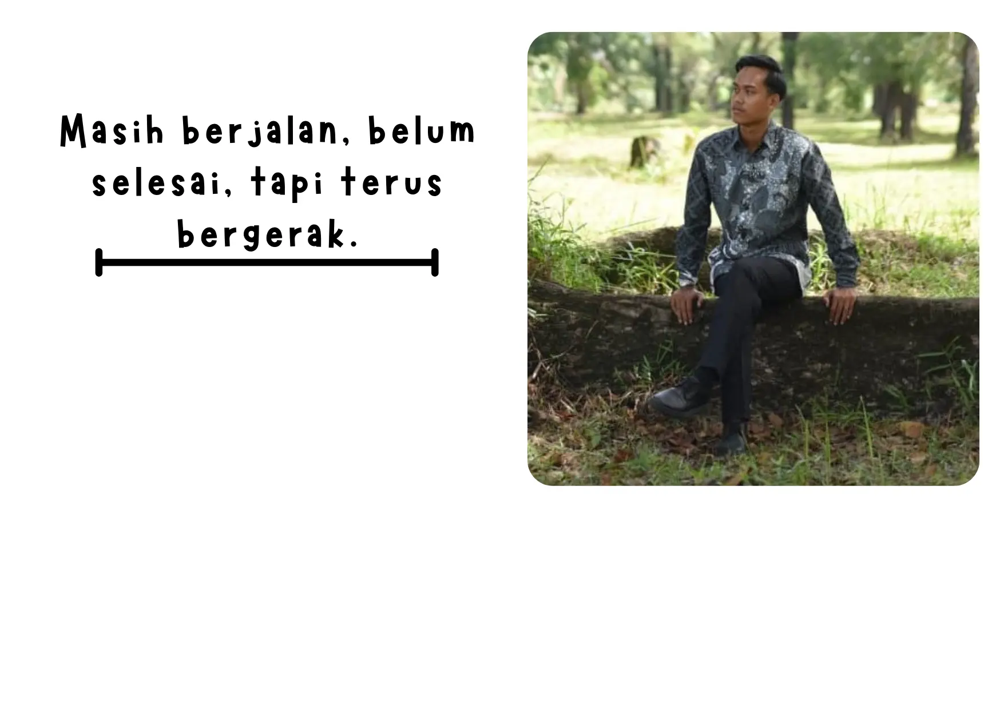
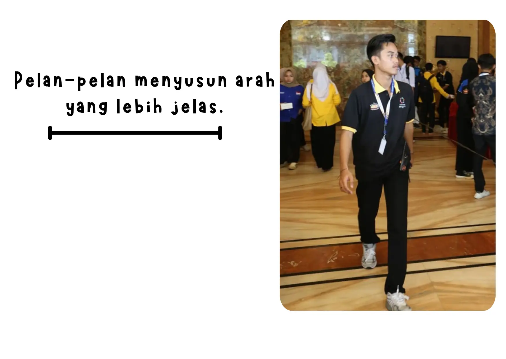
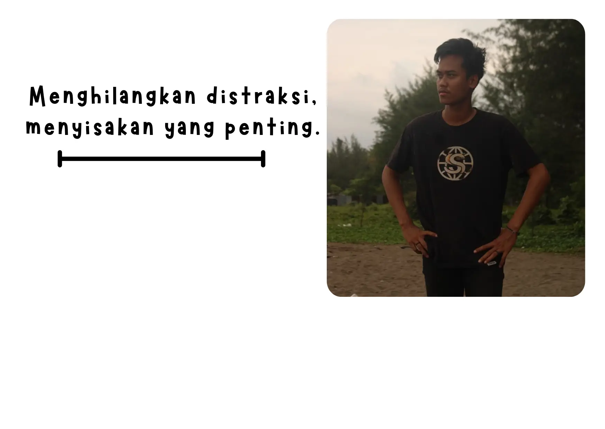
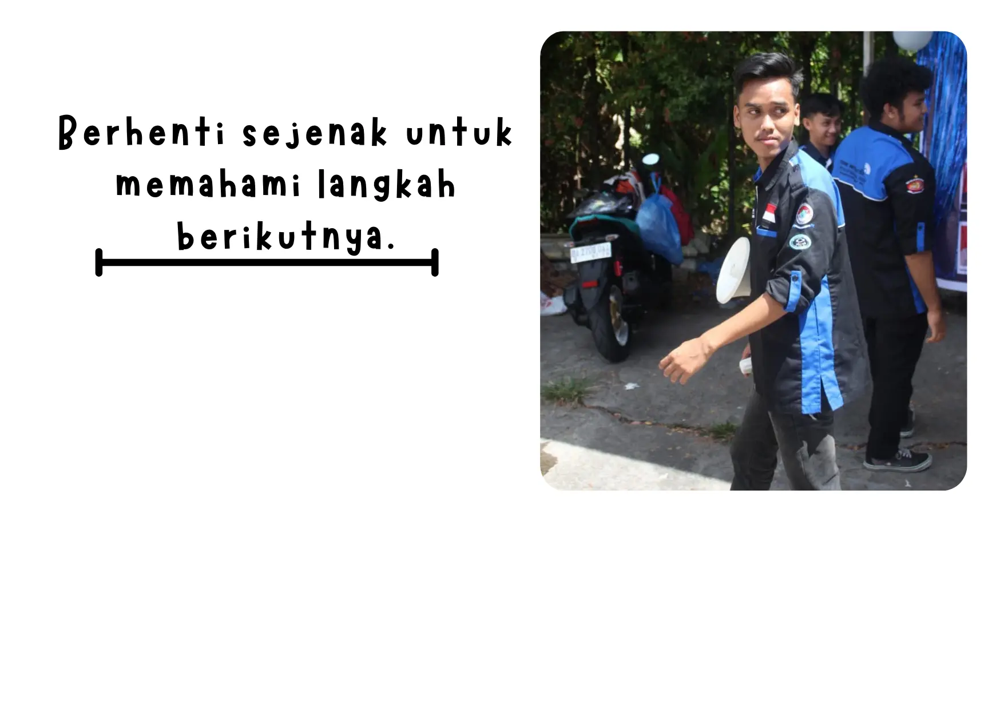
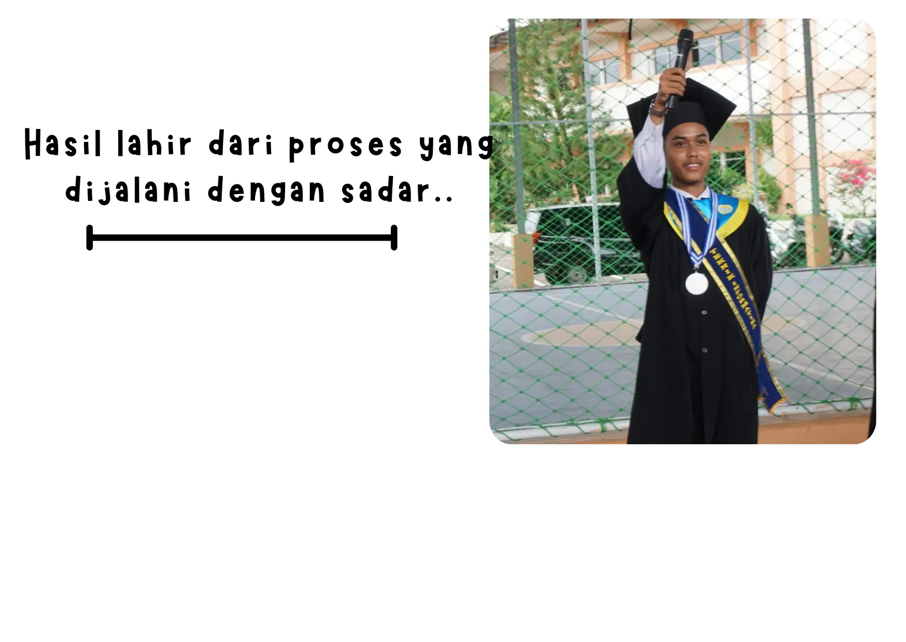
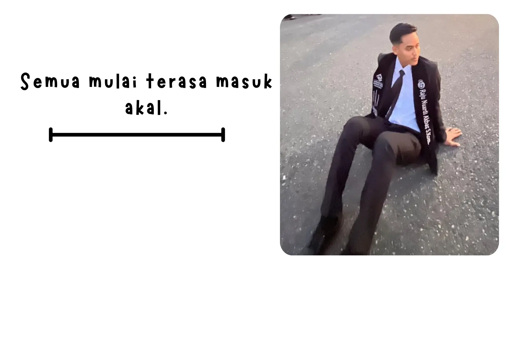
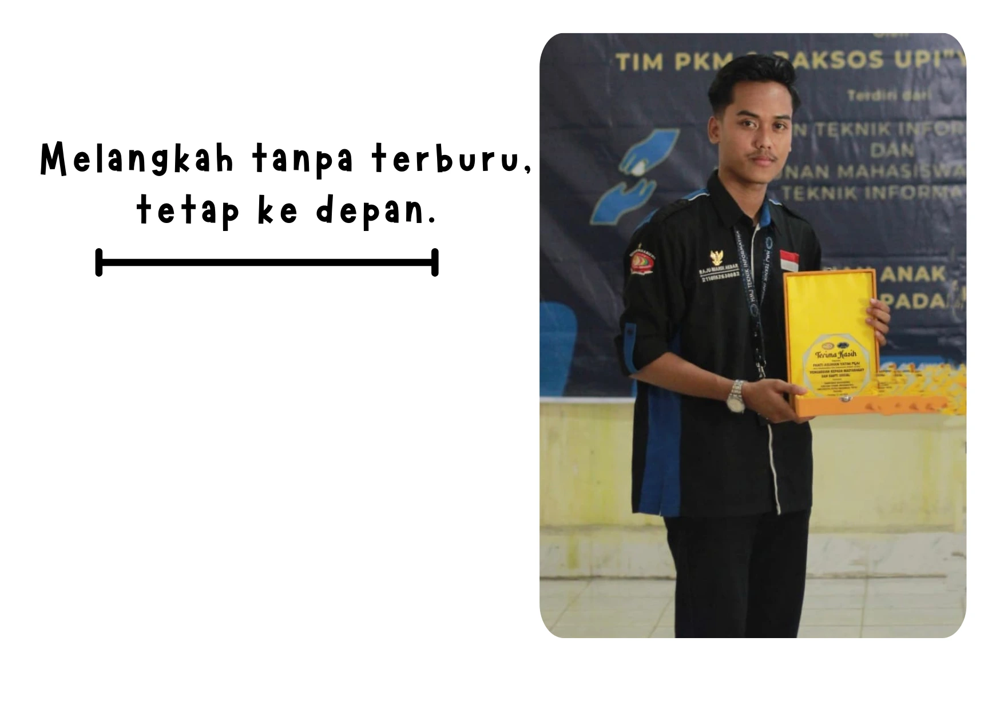
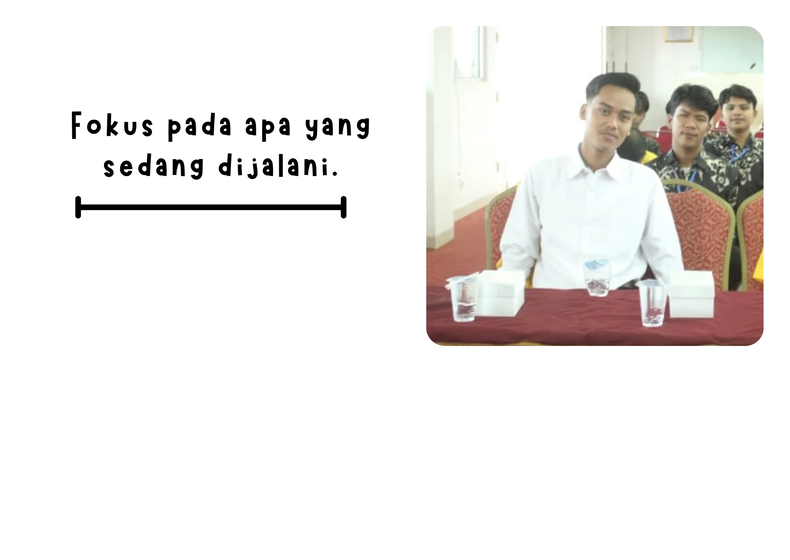
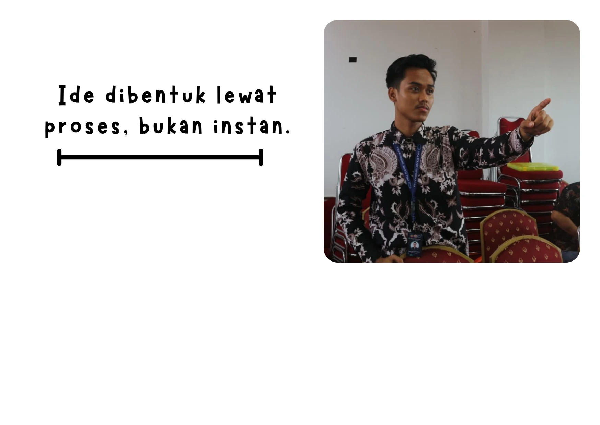
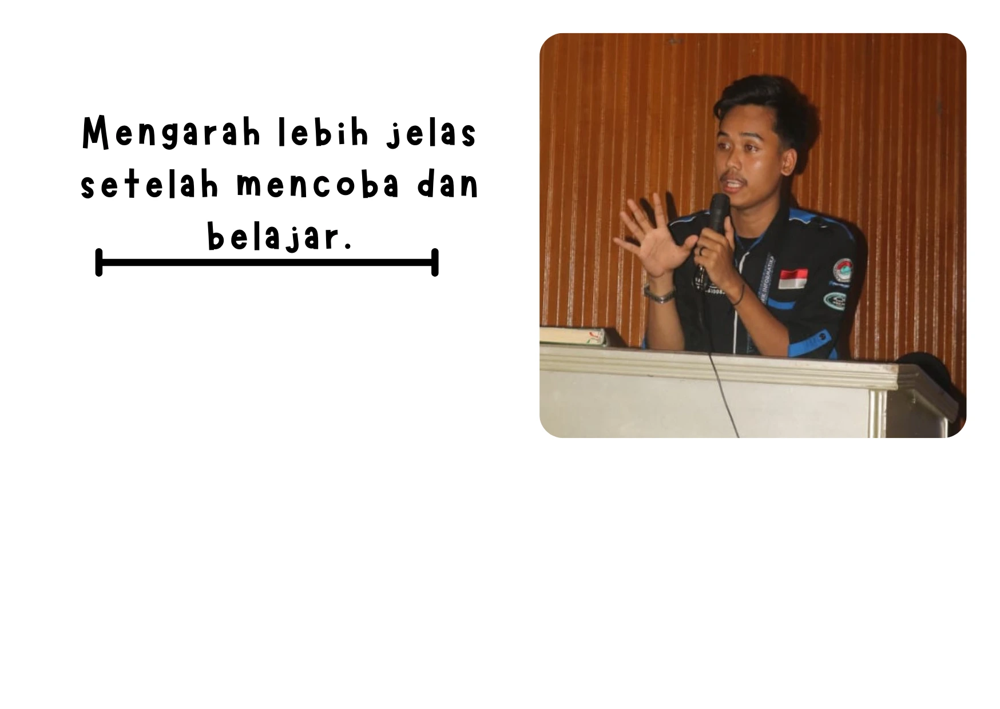

Raju Nuardi Akbar
Data Analyst
Open to Work · Data Analyst
AvailableBerfokus pada analisis data dan visualisasi untuk menghasilkan insight yang mendukung pengambilan keputusan berbasis data.
Education
Universitas Putra Indonesia "YPTK" Padang
S1 Teknik Informatika
GALLERY
→








